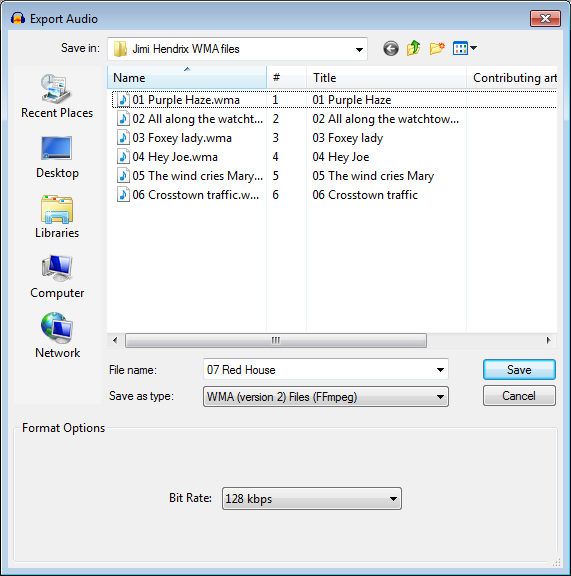

WMA Export Options
WMA is a compressed, lossy audio format developed by Microsoft. It is the default audio format for Windows Media Player.
- Accessed by: then choosing WMA (version2) Files (FFmpeg) from the Save as type dropdown menu.
- 
- Also accessed by: then choosing WMA (version2) Files (FFmpeg) from the Save as type dropdown menu. In this case the options dialog will appear in the center of the Export Multiple dialog.
| FFmpeg is not shipped with Audacity but you can download it and then export as WMA (version 2) by following these instructions. |
WMA Export Setup
- Bit Rate: Choose a bit rate from 24 kbps to 576 kbps. The default is 180 kbps. This produces a larger file of higher quality than default 128 kbps MP3 encoding, the general consensus being that WMA v2 and MP3 produce comparable quality for the same file size. Increasing the WMA bit rate will increase the quality further but produce larger files.
WMA version 2 only supports CBR (constant bit rate) encoding. This means that increasing the sample rate in Selection Toolbar will not produce larger files.